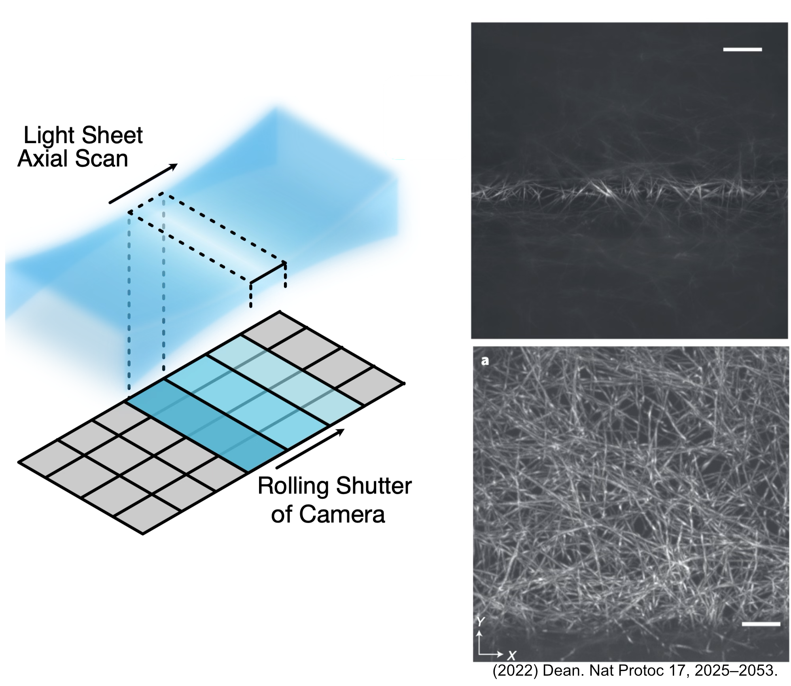
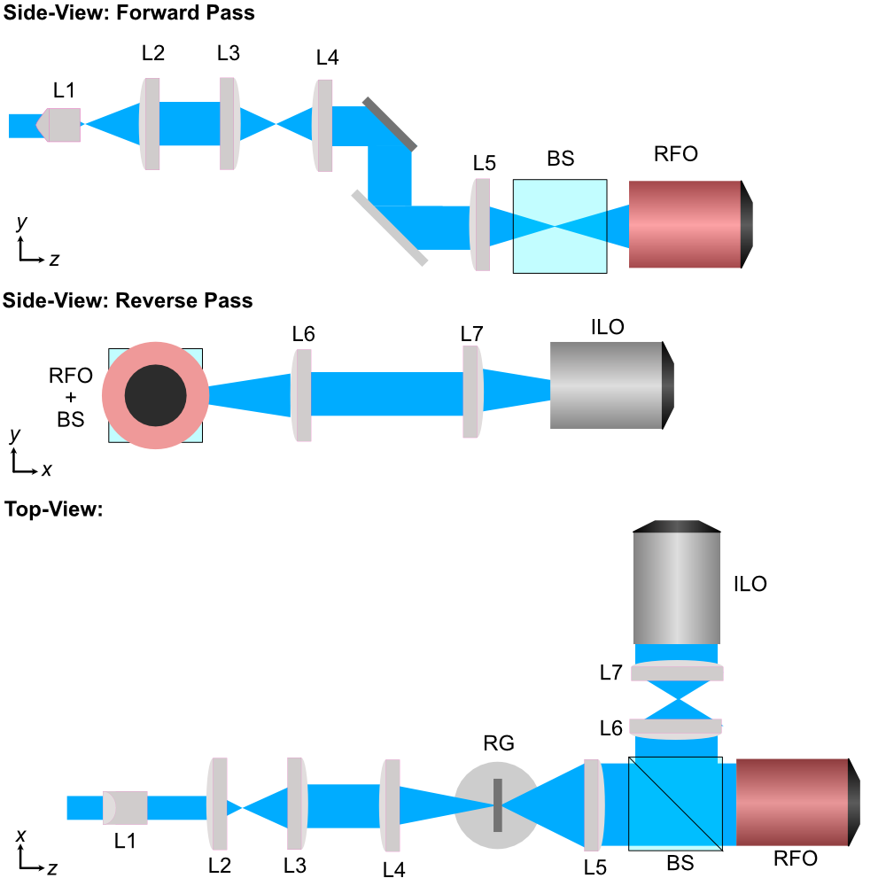
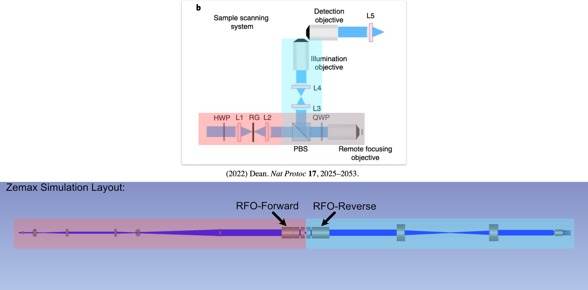
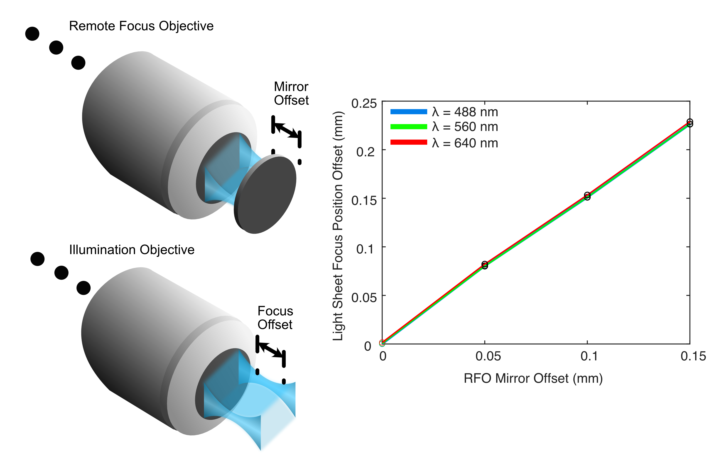
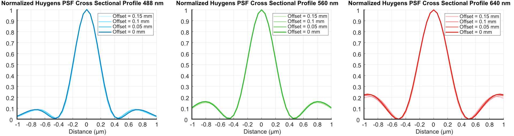
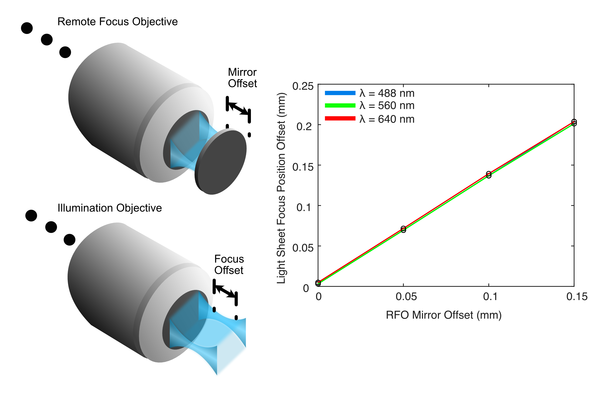
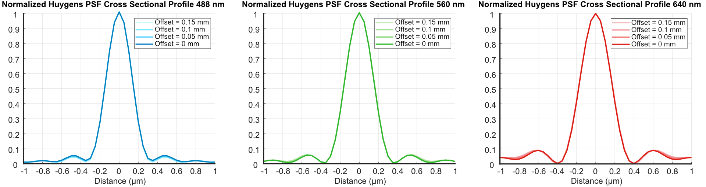
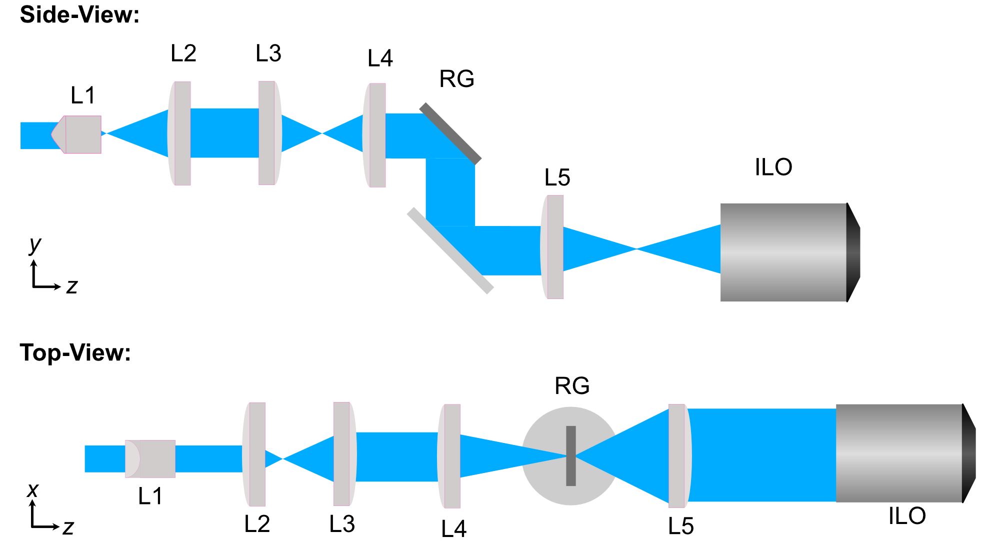
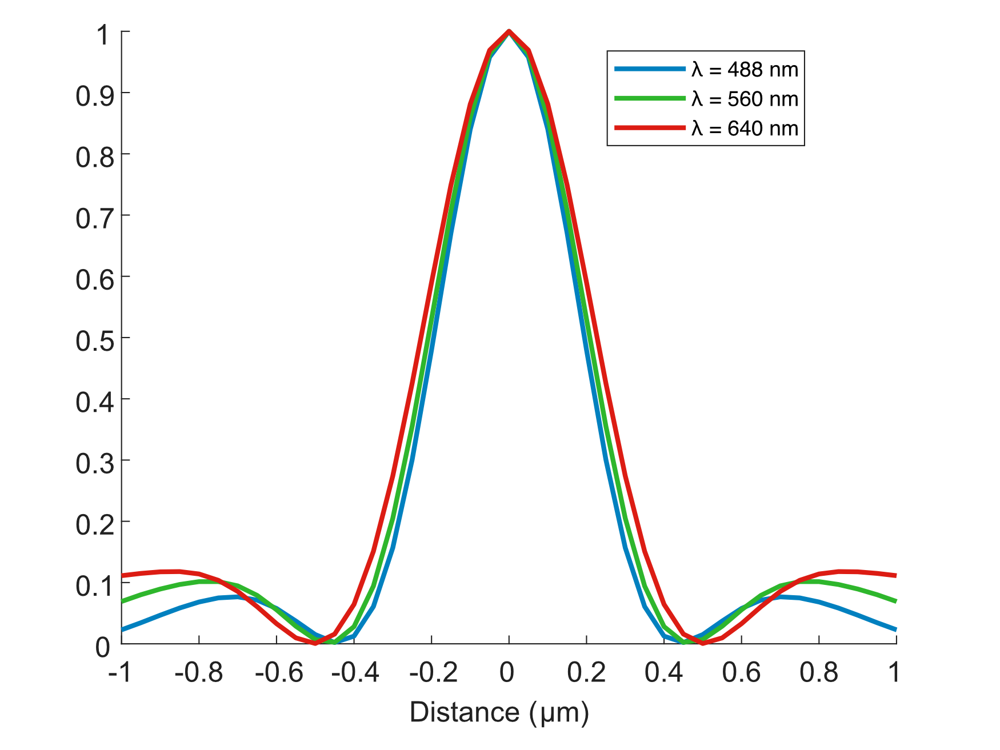
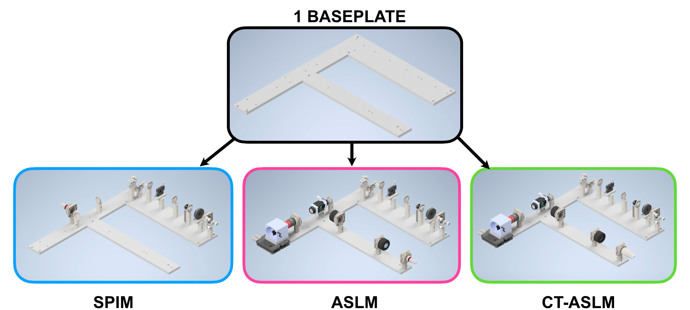

Altair ASLM/CTASLM Baseplate
Overview
For the second iteration of our Altair baseplate system, we set out to make a number of different updates/upgrades from our first baseplate system design.
- For starters, the second iteration of our Altair LSFM baseplate incorporates 3 different microscope configurations:
Traditional Sample-Scanning SPIM
Sample-Scanning Axially-Swept Light Sheet Microscope (ASLM)
Sample-Scanning Cleared-Tissue ASLM (CTASLM)
Where each of these microscope paths incorporate as many of the same elements as possible between them, such that switching or upgrading between these modes is as accessible as possible and doesn’t require repurchasing all components along their respective illumination paths.
The primary distinction between ASLM/CTASLM and our SPIM paths is the incorporation of a remote focusing objective (RFO) system into the illumination path itself. The RFO system essentially allows the light sheet focus to be swept across the full field of view (FOV) of your imaging sensor, in comparison to the traditional SPIM system which is limited to a thin line profile on the imaging sensor. More information on ASLM can be found here. Figure 1 below details the ASLM process, where on the left a schematic of how the focus of the light sheet is swept and synced with the rolling shutter of an associated camera system in ASLM is shown. On the right are two images: the top image is taken without utilizing the RFO, and the bottom image is taken with the RFO, where the beam is swept across the full FOV of the image.

Figure 1: Introduction to the features of ASLM.
Another notable update for these microscope systems is that they are fully optimized via simulation for three different illumination wavelengths (488 nm, 560 nm, and 640 nm), whereas our first baseplate design was optimized specifically for 488 nm. This should improve the overall quality of imaging between the different excitation wavelengths used in various fluorescent tags.
In addition to the aforementioned upgrades, this iteration of Altair also allows for a Powell lens instead of a cylindrical lens as the element that forms our light sheet profile itself. Powell lenses are a specialized variant of lenses that are known to produce line profiles with consistent and uniform intensity. When utilized in light-sheet imaging, these lenses essentially help provide a more uniform intensity of illumination across the full FOV of the imaging sensor when compared to cylindrically formed light-sheets which feature more of a Gaussian intensity distribution associated with them. More information on Powell lenses can be found at Laserline Optics.
Zemax Simulation Setup Process
Similarly to our methods used for designing our first iteration of our baseplate, we first start by using basic magnification equations to select theoretical focal lengths of lenses that would be needed along our illumination path to form a light sheet with our desired physical characteristics. A basic schematic of what one of these Powell-lens-based ASLM systems would look like is shown below in Figure 2.

Figure 2: Schematic of the ASLM illumination path design.
A key consideration in the design process is aberration prevention in a remote-focusing system to ensure mapping the magnification of the remote focus objective (RFO) to that of the illumination objective (ILO). In our case our chosen illumination objective is the Thorlabs TL20X-MPL and our remote focus objective is the Thorlabs TL15X-2P.
Because our RFO and ILO utilize different immersion media (n = 1 for the RFO, n = 1.33 for the ILO), we rely on our lens choices for L6 and L7 to ensure the magnification from sample space to remote space is equal to the ratio of these two refractive indices for our immersion media:
Where using our values for our chosen objectives this becomes:
Leaving us with the relation between the focal lengths of L6 and L7 as
With that relationship solidified, we then moved forward with selecting our lenses in our illumination path as follows:
Lens # |
Lens Description |
Link |
|---|---|---|
L1 |
Powell Lens LOCP-8.9R20-2.0 |
https://laserlineoptics.com/products/powell-lens-20-degree?variant=44313730809890 |
L2 |
Achromatic Doublet f = 30 mm |
https://www.thorlabs.com/thorproduct.cfm?partnumber=AC254-030-A |
L3 |
Achromatic Doublet f = 80 mm |
https://www.thorlabs.com/thorproduct.cfm?partnumber=AC254-080-A |
L4 |
Achromatic Doublet f = 75 mm |
https://www.thorlabs.com/thorproduct.cfm?partnumber=AC254-075-A |
L5 |
Achromatic Doublet f = 300 mm |
https://www.thorlabs.com/thorproduct.cfm?partnumber=AC254-300-A |
L6 |
Tube Lens f = 200 mm |
https://www.thorlabs.com/thorproduct.cfm?partnumber=TTL200-A |
L7 |
Tube Lens f = 200 mm |
https://www.thorlabs.com/thorproduct.cfm?partnumber=TTL200-A |
RFO |
Remote Focus Objective TL15X-2P, EFL = 13.3 mm |
https://www.thorlabs.com/thorproduct.cfm?partnumber=TL15X-2P |
ILO |
Illumination Objective TL20X-MPL, EFL = 10 mm |
https://www.thorlabs.com/thorproduct.cfm?partnumber=TL20X-MPL |
With the lenses selected, we then moved forward with the simulation and optimization of our illumination path in Zemax OpticStudio. Due to the way in which the blackbox files we utilize associated with the objective in our system are designed, we structured our simulation in a way that essentially unfurled the forward and reverse paths of our system to all be in a single direction, where our reverse path is essentially mirrored with respect to our forward path. This setup is shown below in Figure 3.

Figure 3: Conceptual setup of the ASLM-based Zemax simulations.
We optimized our system similar in method to how we optimized our first system, where the general process is placing in each component individually into the simulation and optimizing for either collimation or focusing in a particular direction before adding in the subsequent element. In this first optimization process, the offset of the RFO was set to be 0, such that the reverse path reflection point was the exact focus position of the RFO. After this optimization process, the resulting full-width half-maximums (FWHMs) of our light sheet widths were found to be:
Wavelength |
FWHM |
|---|---|
\(\lambda\) = 488 nm |
~392 nm |
\(\lambda\) = 560 nm |
~422 nm |
\(\lambda\) = 640 nm |
~468 nm |
In order to see how the remote focusing unit would function within our illumination path, we took our initially-optimized path and inserted an additional offset at the focus of the RFO (the inflection point between the forward and reverse paths), with the goal of seeing if we would be able to shift the focus position of our beam across our 266 µm imaging FOV. Our process is essentially as follows:
Insert desired RFO offset
Re-optimize the simulation for the focus position of the illumination objective (all wavelengths weighted together) to get a general focus location for the new light sheet.
Individually re-optimize the focus position of the illumination objective for a single wavelength using a dummy surface
Use Huygen’s PSF analysis to observe the properties of the light sheet at the focus
Repeat Steps 3&4 for each wavelength, and 1&2 for each RFO offset distance
The results from this process for our ASLM configuration are shown below in Figure 4, where we track the focus position for each wavelength as we increase the RFO offset to 150 µm. From this, we saw that by adjusting the RFO offset, we were able to sweep our light-sheet focus up to roughly ~225 µm in a single direction. By adjusting the RFO offset both in a positive and negative direction this would allow us to cover our full imaging FOV easily.

Figure 4: Results from our Zemax simulations of the light sheet focus offset from adjusting the RFO offset
In addition, we tracked how the FWHM cross-sectional profile of our beam changed as we adjusted the RFO offset to make sure it stayed consistent as it would be swept across our image FOV, shown in Figure 5. From these, it can be seen that even up to our largest RFO offset, our beam waist stays consistent in size across all wavelengths.

Figure 5: Results from our Zemax simulations of the light-sheet FWHMs from adjusting the RFO offset
Adapting for CT-ASLM
In order to allow for a wider variety of biological structures to be studied in our systems, we adapted aspects of our ASLM design detailed above to be optimized for imaging cleared or expanded tissue or bone samples, in a configuration known as cleared-tissue ASLM (CT-ASLM). These samples require a different type of immersion media compared to the water (n=1.33) used in traditional ASLM, where typically liquids like BABB (n=1.56) can be used to match the refractive index of the cleared samples.
Our illumination and detection objectives for our CT-ASLM system are changed to both be ASI 54-12-8 Multi-immersion objectives, which are designed to be able to withstand being immersed in media like refractive-index matching media such as BABB. The illumination objective has a different effective focal length than that of the TL20X-MPL objective used in our standard ASLM configuration, so we need to revisit our choice of lenses for L6 and L7:
Where our new relationship between L6 and L7 becomes:
Based on this relationship, we chose L7 to be f = 180 mm and L6 to be f = 200 mm, and used the equivalent tube lenses from Thorlabs that match these (TTL180-A and TTL200-A, respectively). Our path elements for the CTASLM then become:
Lens # |
Lens Description |
Link |
|---|---|---|
L1 |
Powell Lens LOCP-8.9R20-2.0 |
https://laserlineoptics.com/products/powell-lens-20-degree?variant=44313730809890 |
L2 |
Achromatic Doublet f = 30 mm |
https://www.thorlabs.com/thorproduct.cfm?partnumber=AC254-030-A |
L3 |
Achromatic Doublet f = 80 mm |
https://www.thorlabs.com/thorproduct.cfm?partnumber=AC254-080-A |
L4 |
Achromatic Doublet f = 75 mm |
https://www.thorlabs.com/thorproduct.cfm?partnumber=AC254-075-A |
L5 |
Achromatic Doublet f = 300 mm |
https://www.thorlabs.com/thorproduct.cfm?partnumber=AC254-300-A |
L6 |
Tube Lens f = 200 mm |
https://www.thorlabs.com/thorproduct.cfm?partnumber=TTL200-A |
L7 |
Tube Lens f = 180 mm |
https://www.thorlabs.com/thorproduct.cfm?partnumber=TTL180-A |
RFO |
Remote Focus Objective TL15X-2P, EFL = 13.3 mm |
https://www.thorlabs.com/thorproduct.cfm?partnumber=TL15X-2P |
ILO |
Illumination Objective ASI 54-12-8 Multi-immersion Objective, EFL = 8.4 mm |
Re-optimizing the system with our new illumination objective and L7 with a sample immersion media of n = 1.56 yielded the following FWHM of our end light sheet widths:
Wavelength |
FWHM |
|---|---|
\(\lambda\) = 488 nm |
~300 nm |
\(\lambda\) = 560 nm |
~324 nm |
\(\lambda\) = 640 nm |
~356 nm |

Figure 6: Results from our Zemax simulations of the light sheet focus offset from adjusting the RFO offset

Figure 7: CT-ASLM results from our Zemax simulations of the light-sheet FWHMs from adjusting the RFO offset
Incorporating SPIM
In addition to ASLM and CT-ASLM, we also wanted to update our original SPIM design used in our first baseplate iteration to use a Powell lens approach.

Figure 8: Conceptual setup of the SPIM-based Zemax simulations.
Lens # |
Lens Description |
Link |
|---|---|---|
L1 |
Powell Lens LOCP-8.9R20-2.0 |
https://laserlineoptics.com/products/powell-lens-20-degree?variant=44313730809890 |
L2 |
Achromatic Doublet f = 30 mm |
https://www.thorlabs.com/thorproduct.cfm?partnumber=AC254-030-A |
L3 |
Achromatic Doublet f = 80 mm |
https://www.thorlabs.com/thorproduct.cfm?partnumber=AC254-080-A |
L4 |
Achromatic Doublet f = 75 mm |
https://www.thorlabs.com/thorproduct.cfm?partnumber=AC254-075-A |
L5 |
Achromatic Doublet f = 300 mm |
https://www.thorlabs.com/thorproduct.cfm?partnumber=AC254-300-A |
ILO |
Illumination Objective TL20X-MPL, EFL = 10 mm |
https://www.thorlabs.com/thorproduct.cfm?partnumber=TL20X-MPL |
Wavelength |
FWHM |
|---|---|
\(\lambda\) = 488 nm |
~390 nm |
\(\lambda\) = 560 nm |
~416 nm |
\(\lambda\) = 640 nm |
~454 nm |

Figure 9: SPIM results from our Zemax simulations of the light-sheet FWHMs for different wavelengths
Final Baseplate Design
With our illumination paths for SPIM, ASLM, and CT-ASLM optimized we felt like incorporating multiple illumination paths together on the same baseplate would provide a number of benefits over having individual baseplates for each configuration. Firstly, as all of our illumination paths were designed to utilize the same starting elements (Powell lens through L5), having the illumination paths on the same baseplate allows for straightforward switching between imaging modes. This could serve as an accessible way for labs to test light-sheet imaging in their research via the lower-cost SPIM configuration, and then decide later that they would like to upgrade to the capabilities of an ASLM or CT-ASLM system where they only need to buy the additional components and plug them into the same baseplate. It This configuration also allows straightforward switching between ASLM and CT-ASLM capabilities by swapping L7, the illumination objective, and the sample chamber used.
Going through the same process we detailed for our first baseplate iteration, we determined the locations where holes on our baseplate would need to be to correctly position the optical components of all three of our potential illumination paths. Our final baseplate design for our second iteration of Altair is shown below in Figure 10.

Figure 10: Available microscope builds possible with our single baseplate